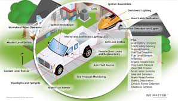

ITS (intelligent transportation system) has been developed since the beginning of 1970s, which makes human, vehicles, roads united and harmonic and establishes a wider range, fully efficient, real-time and accurate information manage system. In the paper, intelligent transportation technologies such as wireless communications, computational technologies, and Sensing technologies have been proposed. Intelligent transportation applications are also introduced. This is a belief abstract for an invited talk at the workshop on power Electronics and Intelligent transportation system.
FThe estimation of urban arterial travel time distribution (TTD) is critical to help implement Intelligent Transportation Systems (ITS) and provide travelers with timely and reliable route guidance. The state-of-practice procedure for arterial TTD estimation commonly assumes that the path travel time follows a certain distribution without considering link correlations. However, this approach appears inappropriate since travel times on successive links are essentially dependent along signalized arterials. In this study, a copula-based approach is proposed to model arterial TTD by accounting for spatial link correlations. First, TTDs on consecutive links along one arterial in Hangzhou, China are investigated. Link TTDs are estimated through the nonparametric kernel smoothing method. Link correlations are analyzed in both unfavorable and favorable coordination cases. Then, Gaussian copula models are introduced to model the dependent structure between link TTDs. The parameters of Gaussian copula are obtained by Maximum-Likelihood Estimation (MLE). Next, path TTDs covering consecutive links are estimated based on the estimated copula models. The results demonstrate the advantage of the proposed copula-based approach, compared with the convolution without capturing link correlations and the empirical distribution fitting methods in both unfavorable and favorable coordination cases.
Red-light-running (RLR) is an important reason for the large number of intersection-related fatalities, injuries, and other losses. The accurate RLR prediction can effectively reduce crashes caused by RLR behavior. The RLR prediction is usually composed of two parts: the vehicle’s stop-or-go behavior and the arrival time when the vehicle reaches the stop line. Previous stop-or-go prediction models are usually based on embedded traffic sensors using machine learning algorithms. While based on the continuous trajectories collected by radar sensors, RLR prediction can be conducted more effectively. In this paper, a probabilistic stop-or-go prediction model based on the Bayesian network (BN) is proposed for RLR prediction. We extend the deterministic output into the probabilistic output, which provides decision-makers with greater autonomy. The causality of BN improves the interpretability of the prediction model. The BN model is calibrated and tested by the continuous trajectories data measured by radar sensors installed at a signalized intersection. We not only consider the movement measurements of individual vehicles (e.g., speed and acceleration), but also take into account the car-following behavior. As a comparison, different machine learning models and the model based on the inductive loop detection (ILD) are adopted. The results show that the proposed BN model has a high prediction accuracy and performs better in the feature interpretation.
This work investigates and discusses how the introduction of electric buses (EB), both battery and plug-in hybrid EB, will and should change the operations planning of a public transit system. It is shown that some changes are required in the design of a transit route network, and in the timetabling and vehicle scheduling processes. Other changes are not required, but are advisable, using this opportunity upon the introduction of EB. The work covers the main characteristics of different types of EB with a short description, including the most popular charging technologies, and it presents the generally accepted transit operations planning process. Likewise, it describes and analytically formulates new challenges that arise when introducing EB. The outcome of the analyses shows that multiple new considerations must take place. It is also shown that the different charging techniques will influence the operations planning process in different ways and to a varying extent. With overnight, quick and continuous charging, the main challenges are in the network route design step, given the possibility of altering the existing network of routes, with efficient and optimal changes of the timetabling and vehicle scheduling components. An illustrative example, based on four bus lines in Norrköping, Sweden, is formulized and introduced using three problem instances of 48, 82, and 116 bus trips. The main results exhibit the minimum number of vehicles required using different scenarios of charging stations.
The last decade has witnessed an unprecedented convergence of communication, control, and sensing that can potentially transform transportation infrastructure and delivery. At the most basic level, efficient operation and maintenance of our nation’s transportation infrastructure requires real time data exchange provided by intelligent transportation system technology. When implemented, these technologies have the potential to revolutionize the nation’s economic vitality by moving people and goods more quickly, efficiently, safely, and at lower cost to consumers.
When the U.S. Department of Transportation (DOT) put out a Smart Cities Challenge, one might have expected the proposed solutions to cluster around transit issues. They did, but many went much further.In its newly issued report on lessons learned from the challenge, which ended in June 2016, the department details a range of proposals that look to leverage transit not just as a tool for managing commuting and congestions, but also as a means for addressing wider range of issues."We see transportation being used as a tool to improve social outcomes," said Sophie Shulman, acting assistant secretary for the USDOT Research and Technology Office. "There are places where there is a problem that is not really about transportation, but where transportation can be a solution."
INFANT MORTALITY
Among the 78 applications the contest received, one striking social solution comes from Columbus, Ohio, the winner of the $40 million prize. That money will supplement a $10 million investment from Paul G. Allen"s Vulcan Inc. and $90 million that the city has already raised from other private partners, all in an effort to reduce infant mortality.
Columbus city officials report that two to three babies under the age of 1 die every week in Franklin County, "far above the national rate." The county"s infant mortality rate is 2.5 times among African-American babies than among whites.
How is that a transit issue?
One smart city official in Columbus explains that the deaths cluster around Linden, a poor neighborhood where expectant mothers have sparse access to public transportation. Because they can't get to the doctor, they don't get the prenatal care they need, said Jeff Ortega, assistant director in the Department of Public Service and an official with Smart Columbus.
The city plans to implement a range of technology fixes to address the issue, starting with smart traffic controls that will allow busses to keep traffic lights green longer, ensuring buses can stay on route and on schedule.
In many cases, local residents don't have credit cards, which means they cannot use ride share services. That's a problem when their homes and their physicians' offices may be located some distance away from bus lines. The city wants to develop kiosks where locals can turn cash into electronic currency, making ride share accessible.
The plan also calls for streetlight-mounted free Wi-Fi, which could help residents connect with ride share or get information on public transportation routes and schedules.
"This wasn't just about using technology to solve a commuting problem, getting from here to there," Ortega said. "It was about using transportation to really solve community problems."
TRANSIT AND MORE
While social issues percolated to the top, many proposed solutions also did aim more directly at transit-related themes. Among the challenges cities face, DOT notes, are:
Parking inefficiency: Some 30 percent of urban traffic is caused by cars looking for parking.
Poor logistics: Trucks stuck in stop-and-go traffic cost shippers roughly $28 million a year in operating costs and wasted fuel.
Climate change: The 78 applicant cities represent over 1 billion metric tons of CO2 emissions per year.
While cities took a broad range of approaches in addressing these and other issues, some common strategies emerged.
Forty-four cities proposed testing automated shared-use vehicles to help travelers connect to their destinations. Eleven cities suggested using sensors and other technologies to improve curb management.
Fifty-three applicants proposed using various forms of Dedicated Short Range Communication (DSRC) to connect vehicles to infrastructure and each other. In fact, the seven finalists proposed implementing DSRC in more than 1,000 advanced traffic signals and 13,000 vehicles.
Atlanta suggests a network of multimodal transportation centers that would serve not just as mobility hubs, but also as a focal point for economic development and community activity. Boston envisions "radically programmable" city streets, where dynamic markings could change loading zones to thoroughfares depending on need.
Detroit is looking at forging partnerships between government, industry and academia to promote electric car shares and automated shuttles. In Las Vegas, officials are pondering electric vehicle charging stations to help curb emissions.
All these ideas could eventually have a social impact. "If you improve transit and mobility, you improve access to jobs. People can get to their jobs faster and cheaper, so we looked especially at cities where they put their pilots in underserved neighborhoods, rather than in wealthier neighborhoods," Shulman said.
DOT also looked for a degree of comprehensiveness, for example in leaning toward plans that incorporated not just smartphone apps for improving access to transit, but also public Wi-Fi to enable access to those apps. "If everyone is proposing a smartphone app to get you to transit, and you don't have a cellphone with a data plan, that doesn't help you very much," she said.
Of the 78 projects submitted for consideration in the DoT contest, about 20 are moving forward in some form, Shulman said, noting that even for those who didn't win, the contest could provide a catalyst for progress.
"The challenge clearly inspired a lot of these cities to continue work with their plans and to seek other sources of funding," she said. "This has been an effective way to help these cities go out and look for private funds or to go to their city councils for money, because now they have these plans that really lay out a specific vision."